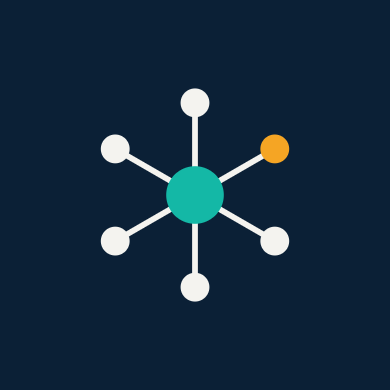

AISEFAISEF is the engineering harness that turns coding agents from black boxes into auditable, evidence-producing systems. One input file. Every claim backed by a SHA.
"If it needs judgement, give it to the model.
If it needs a guarantee, write code."
Most frameworks let the agent decide when it's done. That's asking the student to grade their own exam. When the reviewer is the developer, mistakes are invisible by design.
Tests passed when? On which code? A test suite that ran on a commit three edits ago proves nothing about the code you're shipping. Evidence without a commit hash is an anecdote.
Guards, hooks, and plugins are compiled artifacts. Being syntactically valid doesn't mean the client runs them. A hook pointing to a missing binary means no guard ran at all — silently.
Most agent tools assume you're starting from scratch. Real teams have existing codebases. Without blast-radius analysis, an agent "fixing" one module silently breaks three others.
Nine capabilities no other agent framework offers in combination. Each measured on real agents, not theorized.
Every check records the exact commit it ran on. Evidence from another SHA is classified as stale — a different outcome from failure, and a different outcome from success.
World firstThe review session is a separate agent instance, forbidden to edit code. It can only read and judge. The model never supervises its own output — structural guarantee, not a prompt instruction.
Structural guaranteeAll 16 story-level gate checks have three controls each: positive, negative/mutant, and environment. "Is the gate itself scoring correctly" is answered by a command.
World firstA test already green before the story wrote any code proves nothing. The gate detects this and names the offending test. No credit for pre-existing passes.
World firstEvery acceptance criterion, requirement, and screen has a state: VERIFIED, GAP, or REOPENED. The ledger is rebuilt from evidence — never a second source of truth.
Automatic regressionGuards live on the framework side. A client that cannot host pre-execution guards is recorded as offering weaker assurance — capability declared and tested, defaulting to "unproven".
Proven on 2 clientsPASSED, FAILED, UNRUNNABLE, UNCONFIGURED, WAIVED, NOT_APPLICABLE. Three invariants: unconfigured ≠ passed, unrunnable ≠ failed, unfixed ≠ unfixable.
Epistemic honestyA second loop wraps the first: frozen candidates, behaviour ledger, bounded improvement, preservation gates, and negative controls. Stops in code, not by feeling.
Self-improvingExisting codebase? One command builds a baseline. Code graph providers power blast-radius analysis on every story. Delta planning preserves what works and changes only what the requirement asks.
New in v0.8Capabilities checked against publicly documented features of leading agent frameworks, September 2026.
| Capability | Devin / Factory | Cursor / Windsurf | SWE-agent / Aider | Claude Code / Codex | AISEF |
|---|---|---|---|---|---|
| Evidence bound to commit SHA | No | No | No | No | Yes |
| Reviewer ≠ developer (separate session) | No | No | No | No | Yes |
| Gate checks with qualified controls | No | No | No | No | 16 × 3 |
| Negative control on tests (nop detection) | No | No | No | No | Yes |
| Behaviour ledger with auto-regression | No | No | No | No | Yes |
| Pre-execution guards (framework-side) | Partial | Partial | No | Client-side | 9 guards |
| Brownfield support with blast-radius | No | No | No | No | Yes |
| Six-outcome classification | Pass/Fail | Pass/Fail | Pass/Fail | Pass/Fail | 6 outcomes |
| Evidence-driven improvement loop | No | No | Retry only | No | Bounded loop |
| Zero external dependencies | No | No | No | No | Stdlib only |
Every number comes from real agent runs on real codebases. Where something hasn't been measured, we say so.
One input file drives every phase. Eight human gates control what moves forward.
Detect stack, install skills, generate rules
PRD → Architecture → UX → Epics → Stories
HTML per screen, visual contract extracted
TDD in isolated worktrees, guards active
Independent review + security + 16 gate checks
Pre-deploy gate, acceptance report, behavior ledger
Everything in AISEF belongs to exactly one group. This is the acceptance yardstick for the framework itself.
Engineering constitution compiled into CLAUDE.md/AGENTS.md, pinned skill catalog, four agent roles each with its own fresh session, versioned prompts.
Three evidence-producing tools the agent calls. Every tool carries prose on when to call it, how to read its result, and when not to call it.
Four permission levels, an ExecutionProvider contract, five named guarantees. A provider that can't offer one says which — degraded, never silent.
Role routing where reviewer ≠ developer, story state machine, wave scheduling by dependency and write scope, handoff packets with declared sources.
Nine guards on three lifecycle moments, each a standalone command returning an exit code. Compiled into whatever the client supports.
Structured events with provenance, cost and latency per session, every check bound to the SHA of the candidate, behaviour ledger, benchmark corpus.
One file in, verified software out. Open source, zero dependencies, installs in one command. Works on new and existing codebases.